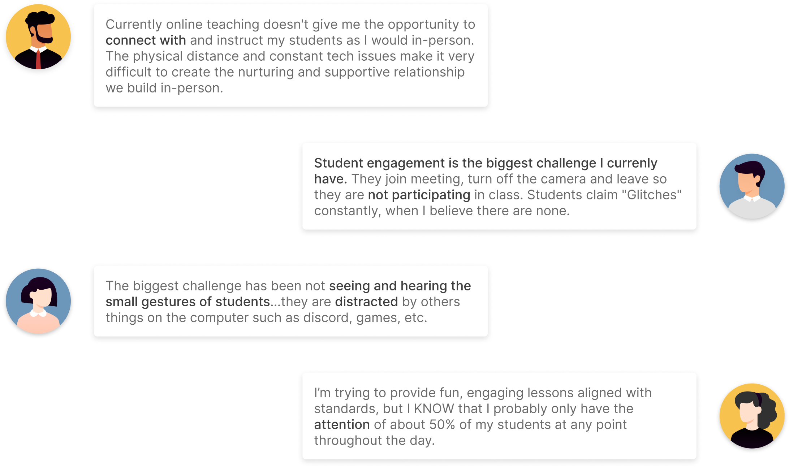

As the first step, we conducted research to learn more about remote teaching for kids in the current market. By analyzing the results we collected through research and interviews, we learned that keeping students focused and engaged during
online classes was the most common concern from the teachers and parents.
We went through major online-teaching-related platforms and apps and did competitive studies. We realized that although there are many apps for video calls and teaching (among which the most widely used are Teams and Google Classroom), few of them focused on making the teaching experience easy and straightforward for elementary school teachers and students.
By conducting qualitative research and quantities through surveys and interviews with the teachers, we gained valuable insights regarding their challenges and needs. We also got inspired by how they teach during in-person teaching -we can adopt some of the methods teachers used and help them achieve the same thing by using the teaching app.
Here are some data showing their frustrations with the current teaching apps:
33% of participants think the current teaching software they are using has not met their needs and needs improvement.
56% of participants got frustrated the most because of the lack of student engagement during the classes
Here are some quotes from the respondents:

Some quotes from the surveys(click to enlarge)
With all the data we gathered from 37 respondents and 7 interviewers, the team conducted affinity mapswith Miro to help us better organize the information and gain insights. We concluded two main pain points from the teachers:
1. It's hard to interact, engage with, and get timely feedback from the kids
2. It's hard to make kids stay focus during the classes
Based on the pain points, we defined the following user stories as the most critical ones for our study:
The team organized brainstorming sessions to gather some ideas and inspire each other. We sketched out all the possible solutions with multiple interfaces, including the homepage, presentation mode, my classes page, message feature, and grading feature.
Some of the inital sketches I did(click to enlarge)
We got a general idea of what we want to build to help achieve the goals by presenting our ideas to each other and realized there was some critical information we needed to gather from the users before proceeding:
1) Is it necessary to show all the students' cameras while the teachers presenting the slides?
2) Is the chatting function frequently used during the classes? Do users prefer chatting over showing reactions to interact?
3) What are the most used features for the users during the classes?
We provided the questions to the user researchers to conduct another round of interviews. We learned that:
1)The chatting features are not often used during the classes;
2)Teachers do want to see the students while teaching;
3)They often use the whiteboard and mute/unmute features during the classes;
4)They wish they could have more ways to organize group discussions such as random call students, breakout rooms, etc.
Based on the results and
our judgments, we decided on the key features to work on. I will be focusing mainly on the design of the homepage, teaching modes, and reaction features for the later tasks.
After brainstorming, I continued to sketch out ideas, mainly focused on homepage and presentation layouts, virtual classroom, call-up students, and giving reactions features. I created the most promising ones in digital formats, and went through design reviews and critiques with the team.
Since the app is for elementary school students and teachers, the interfaces must be straightforward and easily learnable.
The first decision to make is how do we help teachers and students start a class quickly:
Low-fidelity wireframes for homepage options(click to enlarge)
Among different versions of the homepage, I decided to pick the one with the navigation bar on the left and the quick access to the classes at the center. We also validated this idea in the user testing sessions to make sure that teachers prefer to start the course right away when they use the app.
Another complaint from teachers about online teaching is that some students don't want to show their faces, and the teachers can't get immediate feedback from their gestures and reactions.
'They joined the meeting, turned off the camera, and leave so they don't participate in the class.'
We need to find a way to encourage the students to turn on their cameras and better engage
with the classes. With the help of up-front secondary research we conducted, the team decided to create a virtual classroom feature for the app. The idea is to simulate the real scenario of students in the classroom by having everyone
'sit' on the desk and have their faces showing up on a cartoon body. The student who doesn't have their camera on will have a blank camera view. It aims to 'gamify' online class taking and encourage the kids to turn on their cameras.
I experimented with a few options including:
Low-fidelity wireframes for virtual classroom options(click to enlarge)
I picked option3 and option4 as the final options and brought them to discuss with the team. The team chose option3 to get tested since it's neat and straightforward and can accommodate a reasonable amount of students. (there are usually 10-15 students in the class in Broward public schools)
Presentation mode is a big part of online teaching and also where a lot of complaints arose. Teachers want to see the students' faces while presenting - after all, the most important thing for them is confirming the kids understand the information
they are delivering.
How do we show the presentation and students' videos at the same time? Considering the compatibility with Google slides, we use 4:3 and 16:9 as width to height ratios for the presentation area to try out different
layout options.
Testing different layout options for the presentation page
After experimenting with different layout options, I picked the ones below to provide to the users. The layouts are simple and neat - they allow teachers to use the toolbar and see the students' faces when they present, while the slideshow still being the focal point. It also utilizes the space efficiently without being too packed or empty, and it provides the teachers the flexibility to move around their camera view.
Unlike conference calls with adults, teaching young kids requires teachers to pay much more attention to students' reactions and engage with the kids to know if they understand the class contents. Our study and interviews with teachers show one of the most common ways teachers can achieve that is by observing students' reactions and calling up kids to answer questions.
So how do we help teachers to see the students' reactions? And how can we help them call the students to answer questions? We classified the scenarios into two:
Show reactions during class discussions in the virtual classroom
Option A
Option A requires users to drag the emoticon onto other people's camera view to show reactions to the person. It's easy to understand, and all the reactions will show up on people's camera view. However, giving the reaction takes a much longer time than the other options, and it's challenging to do if users want to give out immediate responses.
Option B
In this option, users simply need to click on the 'reaction' button and find the one they want to use. The emoticon they chose will show up on their camera view. The whole process is fast and straightforward to do; however, it's hard for other users to know who the reaction is giving to.
Option C
This option allows users to choose reactions under other users' camera view. It's clear who receive the reaction, but having emoticon options for everyone seems overwhelming, and the interface looks very compact and busy.
After discussion and research, we picked Option B since everyone is supposed to speak freely in the classroom setting, and the chances of using the 'reaction' feature are low. When users do need to give reactions, the scenario is when people
are mute, and one or two students are talking. In this case, it makes more sense to make the reaction button easy to click while only taking a small piece of area.
Call up students to answer questions and show reactions when they talk
We also sketched out different options for teachers to call students to answer questions. The meeting organizer (in this case, the teacher) can put other users on the center of the screen to be the spotlight. The teacher can pin students to the center of the screen and give reactions to the students.
Users can give reactions to the pinned student
Before we moved onto the high-fidelity design, we made a prototype with different solutions we had in wireframe by using Figma. And we designed and conducted unmoderated user testing through Maze. From the seven responses we gathered, we were able to get some valuable feedback and insights:
After the user testing, we identified the following designs to be modified:
1) The current reaction users can be interpreted as given to the pinned speaker. The reaction feature in the classroom mode needs to be more precise
about whom the reactions the users are giving to.
2) We can try to have the slideshow show in a small screen while having the students pinned at the center of the screen. It provides an even easier alternative to go back to the
slideshow mode.
The overall user flow stays similar to the wireframes. I modified the design based on the feedbacks and created high-fidelity interfaces. I chose a complementary color combination - ‘green’ and ‘red’ to be the app’s primary color. Red is energizing and associated with strength and friendliness, while green is calming, soothing, and can bring down the excitement to an ideal level.


{kind=link}
{kind=link}
{kind=link}
{kind=link}
{kind=link}
{kind=link}
{kind=link}